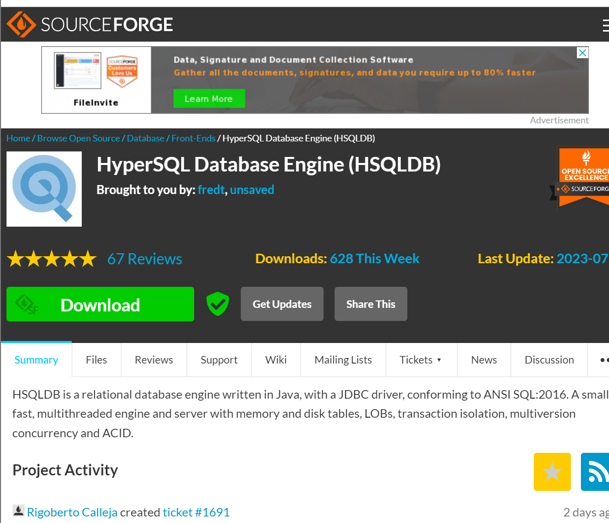
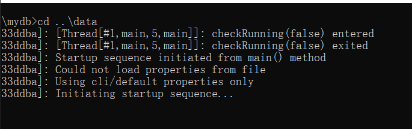
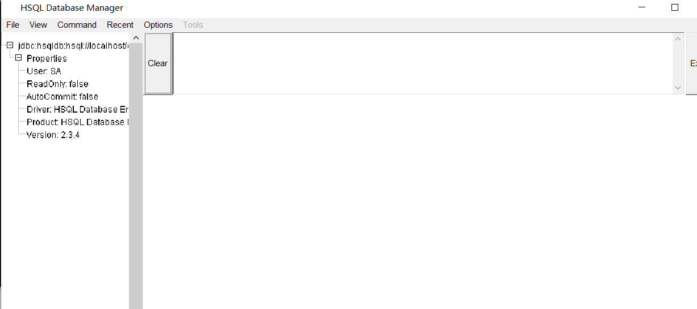
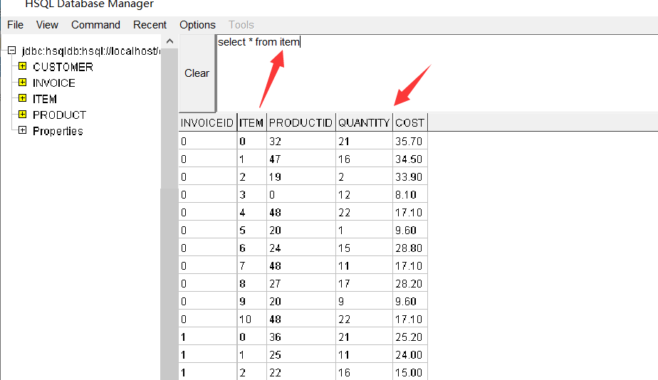
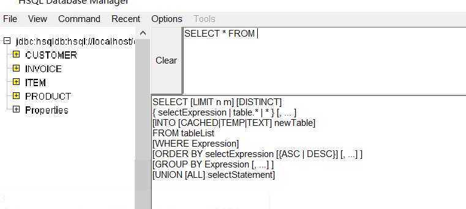
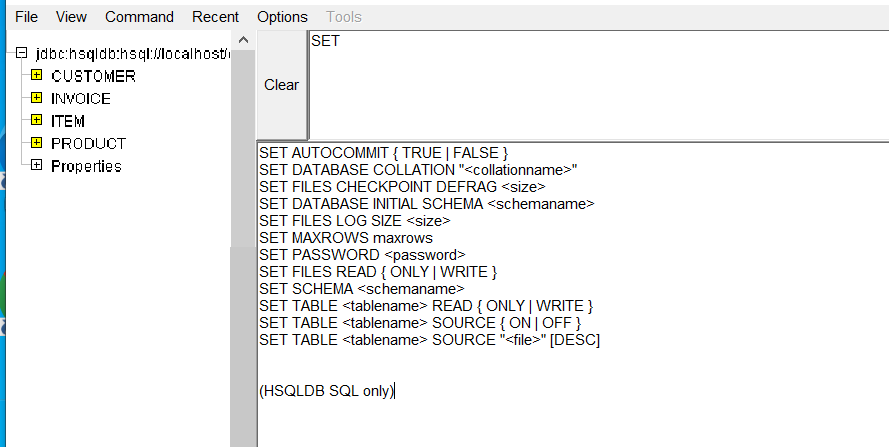
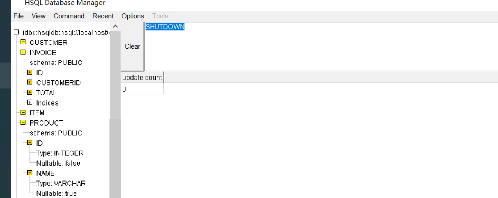
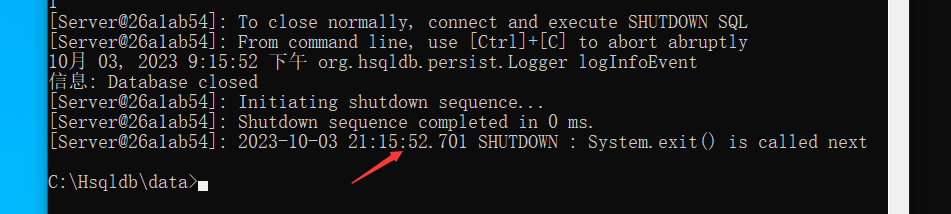

0x01 前言
本文主要是在一次做攻防世界中的题时，所遇到的不懂的点，故此学习一番记录一下。这里并不会讲太深，emmm，因为我感觉不必太深只是懂了各种增删改查的语句我认为即可。话不都说开始卷！
0x02 Hsql
2.1 HSQLDB 介绍
HyperSQL 数据库 (HSQLDB) 是一种现代关系数据库管理器，它紧密符合 SQL:2011 标准和 JDBC 4 规范。它支持所有核心功能和 RDBMS。HSQLDB 用于开发、测试和部署数据库应用程序。
HSQLDB 的主要和独特功能是标准合规性。它可以在用户的应用程序进程内、应用程序服务器内或作为单独的服务器进程提供数据库访问。
2.2 HSQLDB 特点
- HSQLDB 使用内存结构对数据库服务器进行快速操作。它根据用户的灵活性使用磁盘持久性，并具有可靠的崩溃恢复。
- HSQLDB 也适用于商业智能、ETL 和其他处理大型数据集的应用程序。
- HSQLDB 具有广泛的企业部署选项，例如 XA 事务、连接池数据源和远程身份验证。
- HSQLDB 是用 Java 编程语言编写的，并在 Java 虚拟机 (JVM) 中运行。它支持用于数据库访问的 JDBC 接口。
2.3 HSQLDB 组成部分
HSQLDB jar 包中有三个不同的组件。
- HyperSQL RDBMS 引擎 (HSQLDB)
- HyperSQL JDBC 驱动程序
- 数据库管理器（GUI 数据库访问工具，具有 Swing 和 AWT 版本）
HyperSQL RDBMS 和 JDBC 驱动程序提供核心功能。数据库管理器是通用数据库访问工具，可与任何具有 JDBC 驱动程序的数据库引擎一起使用。
另一个名为 sqltool.jar 的 jar 包含 Sql Tool，它是一个命令行数据库访问工具。这是一个通用命令。Line 数据库访问工具，也可以与其他数据库引擎一起使用。
0x03 HSQLDB 安装
HSQLDB 是一个用纯 Java 实现的关系数据库管理系统。您可以使用 JDBC 轻松地将此数据库嵌入到您的应用程序中。或者您可以单独使用这些操作。
3.1 先决条件
遵循 HSQLDB 的必备软件安装。
3.2 验证 Java 安装
由于HSQLDB是纯Java实现的关系型数据库管理系统，所以在安装HSQLDB之前必须先安装JDK（Java Development Kit）软件。如果您的系统中已经安装了 JDK，请尝试以下命令来验证 Java 版本。
1 | |
如果您的系统中成功安装了 JDK，您将获得以下输出。
1 | |
如果您的系统中没有安装 JDK，请访问以下链接以安装 JDK。
3.3 HSQLDB 安装
以下是安装 HSQLDB 的步骤。
步骤 1 – 下载 HSQLDB 包
从以下链接https://sourceforge.net/projects/hsqldb/files/下载最新版本的 HSQLDB 数据库

3.4 准备驱动
步骤 2 – 解压缩 HSQLDB zip 文件
解压缩 zip 文件并将其放入C:\目录（任意目录均可）

这里也是废了我很长时间，试验下来似乎只有2.3.4版本的稳定，其他版本的不知道如何启动，而且也没有近几年关于此hsqldb的介绍文章了。难受
步骤 3 – 创建默认数据库
1、 在d盘下建立一个目录hsqldb文件夹（这个是任意建立的），在文件夹中创建lib文件夹，将hsqldb-2.3.4解压后的lib目录下的hsqldb.jar拷贝到里面，然后在hsqldb文件夹中创建一个data的文件夹。
3.5 启动服务
2、 创建数据库
进入命令提示符，进入data文件夹，输入下面的命令：
1 | |

成功开启
3、 在data文件夹中就会出现两个文件：test.log和 test.properties，也就是创建了一个名称为test的数据库，如下图所示。

这里一直到启动数据库那里都存在问题，我不清楚该数据库的别名是啥了。。。解决的话看后面（跳过这里）
4、 然后在hsqldb的文件夹中创建一个mydb文件夹，在文件夹中创建三个文件：runManager.bat，runManagerSwing.bat和runServer2.bat
runManager.bat对应的内容为：
1 | |
runManagerSwing.bat对应的内容为：
1 | |
runServer2.bat对应的内容为：
1 | |
5、 运行hsqldb
双击runServer2.bat文件，此时回弹出命令行窗口，如下图，表示已启动 HSQLDB 数据库。

这里弹一下就没了，我截不住图。。。。
此时，产生了三个文件，如：
1 | |
3.6 运行模式
数据库引擎分4种工作模式：内存In-Memory、独立Standalone、服务器Server、韦伯服务器WebServer，启动方式参数大同小异，本文以第三种为例；

4. 管理HSQL
启动HSQL管理工具，打开命令行窗口，执行下列命令：
java -cp hsqldb.jar org.hsqldb.util.DatabaseManager
出现connect窗口：
不过这里直接双击运行runManager.bat即可

1 | |
在命令行模式下启动HSQL服务器模式：
java -cp ../lib/hsqldb.jar org.hsqldb.Server -database.0 db -dbname.0 db
命令中的org.hsqldb.Server -database.0与-dbname.0为固定值，db 为数据库别名，如果该库存在，则打开该库，不存在，则新建并打开。
java -cp ../lib/hsqldb.jar org.hsqldb.util.DatabaseManager
上述命令会启动服务
选择引擎Type：HSQL Database Engine Server模式，修改URL：jdbc:hsqldb:hsql://localhost/db，db为步骤三中指定的数据库别名，用户名SA，密码为空，登录。
3.7 执行SQL
登录成功后，工作台如图所示，界面简单的像是Demo！左侧为数据库的所有表树图，右上侧为SQL编辑区：

输入SQL语句，点击右侧Execute执行

在这里大小写均可，不过还是推荐大写
获得HSQL语法帮助，点击菜单Command ——> CREATE TABLE ：

HSQL SELECT语法：

HSQL环境变量：

3.7 关闭HSQL
在SQL编辑区输入shutdown命令，单击Execute执行：

服务器响应如下：

0x04 进一步熟悉
回顾之前做的ctf题目，其中一个sql语句是这样写的
1 | |
而佬是这样绕过的：
1 | |
这样的话他是这样传参的
1 | |
这里呢，前面的第一个单引号是为了闭合where name='中的单引号
后面的用or隔开，接着是’1’ > ‘0’，很明显恒为true，接着在or隔开name like 'admin，这里的单引号用来闭合name ='" + name + "'中的最后的单引号。由于1>0为true，那么这整条语句就为true，也就不需要关心密码是多少了。
至于为何要1>0而不用1=1，是因为题目过滤了等于号
至于为什么是要用两个or，是因为，mysql里and优先级比or高
那么两个or的作用是保证永真，简单举个例，一个or:admin’ or ‘1’>‘0’ and password=1 表示为false or true and false，先执行true and false，
为false再有false or false那就是false，而两个false or true or true and false是true，因此根据这个逻辑，可以进行盲注
但不理解的是他们是如何知道数据库一定含有admin的用户的。。。可能是猜测一般root用户都是admin吧。。。
0x04 总结
总之这个HSQL与mysql很类似，HSQL数据库有如下两个特点：
一是“纯而精”，它是一款由HSQL Development Group开发的纯Java数据库，遵循BSD-style许可协议，支持SQL99，SQL2003大部分语法标准；
二是“小而轻”，更为重要的是，该数据库体积贼小，数据库引擎、JDBC驱动与管理工具三合一加起来才600多Kb，JBoss、Kettle3.0及以上、DataX 等大多数工具或中间件默认都支持HSQL。